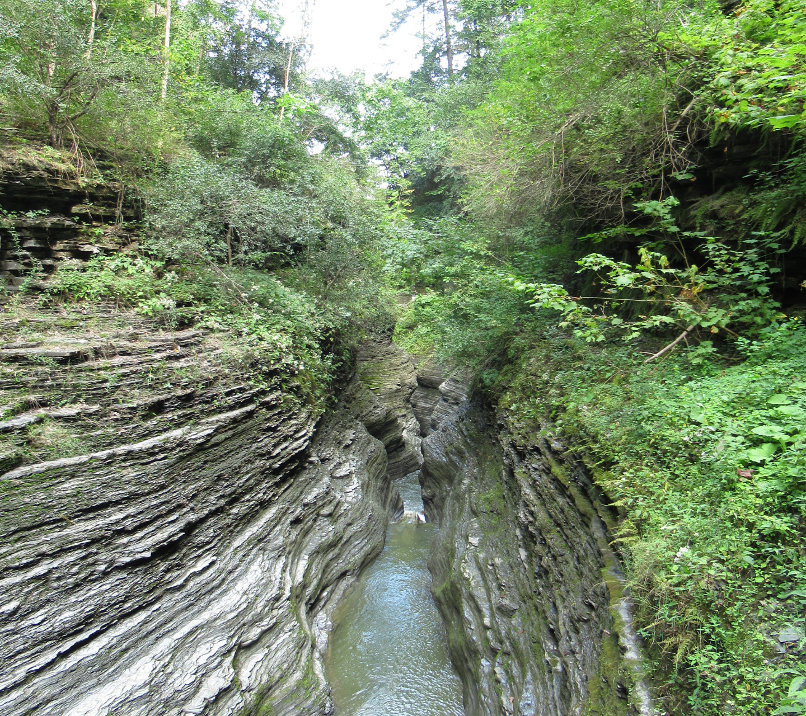

I have spent my career building models, creating datasets, and communicating findings about how ecosystem processes respond to environmental conditions. My work spans across forests, rivers, and lakes and I enjoy cross-pollination of ideas when problem solving. I regularly combine existing public datasets in new ways to answer environmental questions and I use programming to help automate my workflows, gain insights into environmental processes, and visualize my work. My career has been committed to environmental research as an academic, a contractor, and a federal scientist.
I grew up in Rochester N.Y. and currently live in Buffalo N.Y., so a large chunk of my life has been spent adjacent to the Great Lakes. Outside of work I enjoy cycling, playing guitar, painting and spending time with my wife and our dog. I'm a lover of board games, British comedy, fantasy/science fiction, and puns of all varieties.
